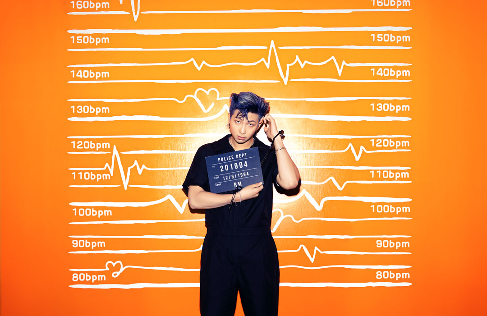
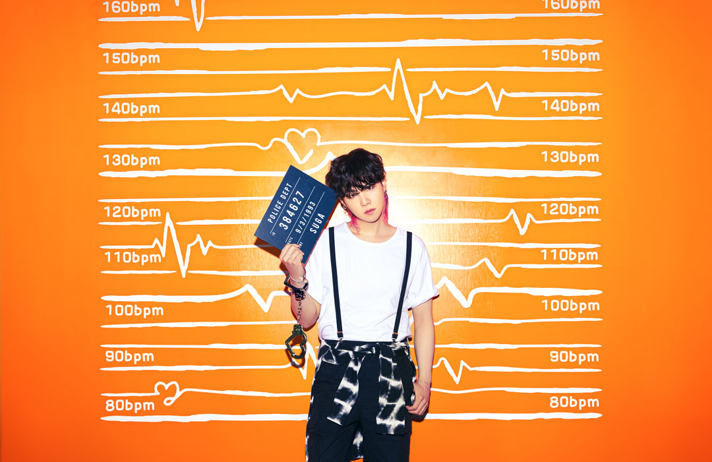
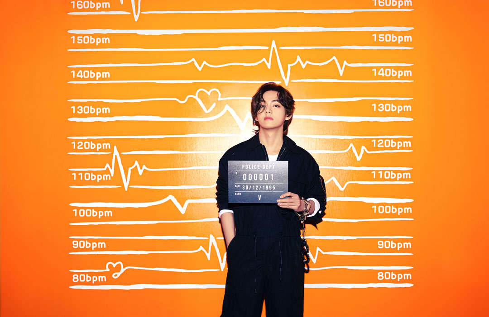
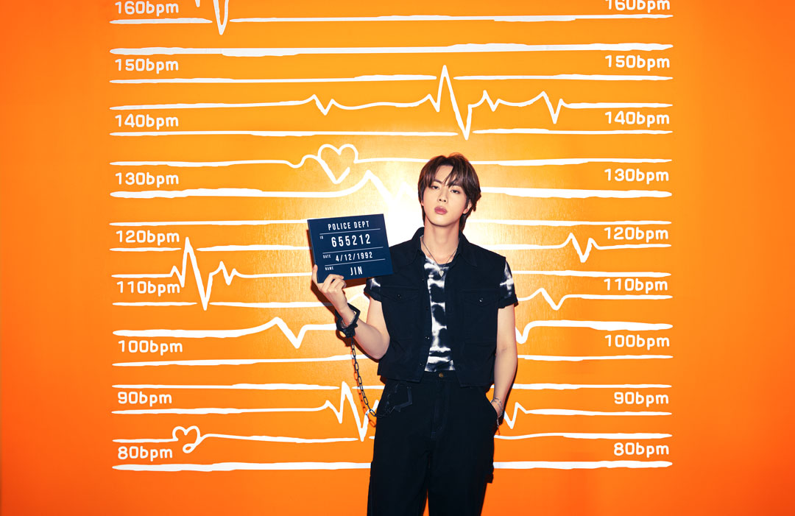
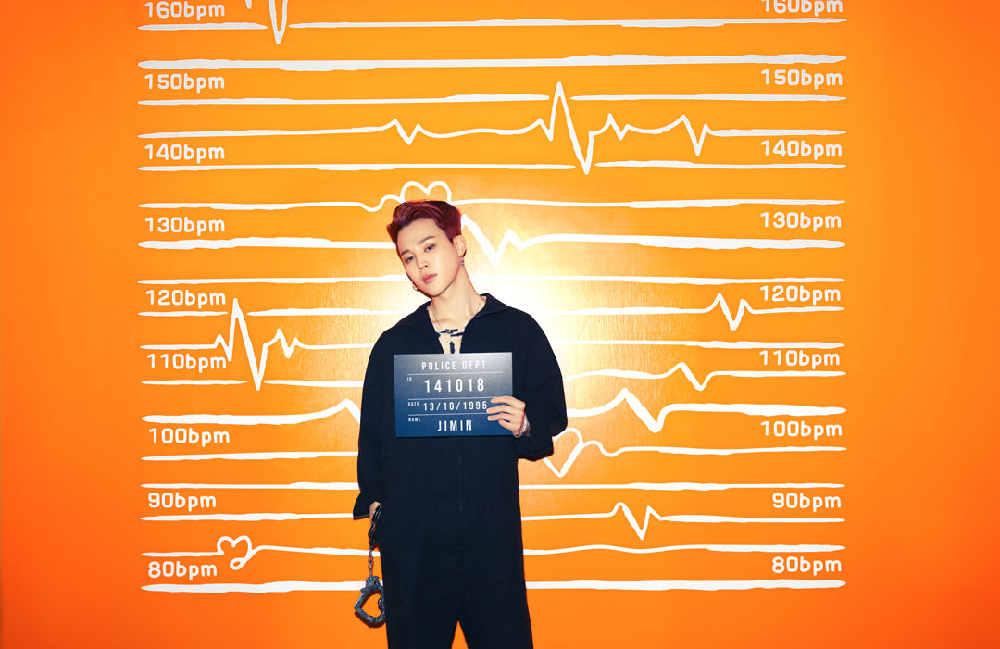
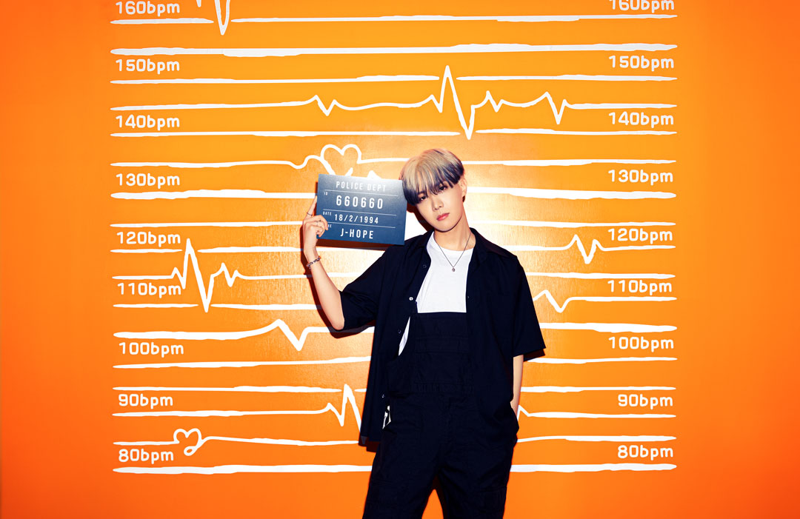

- Kim Nam Joon
- 12 de septiembre de 1994
- Ilsan-Seúl (Corea del sur)
- Rapero, Compositor y Productor

- Min Yoon Gi
- 9 de marzo de 1993
- Buk-gu, Daegu (Corea del sur)
- Rapero, Compositor y Productor

- Kim Tae Hyung
- 30 de diciembre
- Daegu-Geochang (Corea del sur)
- Vocalista, Bailarin y compositor
- Jeon Jung Kook
- 1 de septiembre de 1997
- Busan (Corea del sur)
- Vocalista, Bailarin y compositor

- Kim Seok Jin
- 4 de Diciembre de 1992
- Gwacheon, Gyeonggi (Corea del sur)
- Vocalista, visual y compositor

- Park Ji Min
- 13 de Octubre de 1995
- Busan (Corea del sur)
- Vocalista, Bailarin y compositor

- Jung Ho Seok
- 18 de febrero de 1994
- Gwangju, Joella del Sur (Corea del sur)
- Rapero, bailarin y compositor